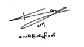

ပါစီဂျက်ဆန်ဇာတ်လမ်းတွဲရဲ့ ပထမဆုံးစာအုပ်ဖြစ်တဲ့ “မိုးကြိုးခိုးသူ” စာအုပ် ကို ၂၀၁၆ နှစ်ကုန်ခါနီးကတည်းက ပြန်ရေးဖြစ်ခဲ့ပြီး ၂၀၁၇ မတ်လမှာ “Phoenix Kingdom Publishing” မှ ပုံနှိပ်ထုတ်ဝေနိုင်ခဲ့ပါတယ်။ ၂ဝဝ၇ ခုနှစ် “မှော်ဝင်ရတနာ” စာအုပ် ဘာသာပြန်ပြီးချိန်ကတည်းက ပါစီဂျက်ဆန်ဇာတ်လမ်းတွဲတွေ ရေးဖို့ အိပ်မက်မက်ခဲ့ဖူးပြီး ဆယ်နှစ်နီးပါး ကြာတဲ့အချိန်မှာမှ ဒီအိပ်မက်ကို အကောင်အထည် ဖော်နိုင်ခဲ့တာပါ။ “ပါစီဂျက်ဆန်နှင့် အိုလံပစ် နတ်ဘုရား များ” ဇာတ်လမ်းတွဲ ကို စတင်ထုတ်ဝေရာမှာလည်း အခက်အခဲတွေရှိခဲ့ပြီး ဒုတိယစာအုပ် “မိစ္ဆာပင်လယ်” ထွက်ရှိနိုင်ဖို့ အချိန် ခုနစ်လထိ ကြာမြင့်ခဲ့ပါတယ်။
တတိယစာအုပ်ဖြစ်တဲ့ “ကမ္ဘာဦးကျိန်စာ” နဲ့ ဝတ္ထုစာအုပ်ဖြစ်တဲ့ “မှော်ဝင်္ကပါ တိုက်ပွဲ” စာအုပ်တွေကတော့ စာအုပ်တိုက်ကနေ သတ်မှတ်ချိန်နဲ့ သိပ်မကွာဘဲ ထုတ်ဝေနိုင်ခဲ့ပြီး ပုံမှန်အတိုင်း ရေးသားချိန်နဲ့ စီစဉ်ချိန် ယူခဲ့ရတာပဲ ရှိပါတယ်။ အခု ဒီအမှာစာကို ရေးတဲ့အချိန် ၂၀၁၉၊ ဇွန်လမှာတော့ နှစ်နှစ်ကျော် လျှောက်လှမ်းလာခဲ့တဲ့ “ပါစီဂျက်ဆန်နှင့် အိုလံပစ်နတ်ဘုရားများ” ဇာတ်လမ်းတွဲဟာ လုံးဝပြီးဆုံးခဲ့ပြီ ဖြစ်ပါတယ်။ ကျွန်တော်နဲ့ အတူတူ ဒီခရီးရှည်ကြီးကို စိတ်ရှည်ရှည်နဲ့ လိုက်ပါပြီး အား ဖတ်ရှုခဲ့တဲ့ ပရိသတ်ကို အထူးပဲ ကျေးဇူးတင်မိပါတယ်။
“ပါစီဂျက်ဆန်နှင့် အိုလံပစ်နတ်ဘုရားများ” ဇာတ်လမ်းတွဲရဲ့ ဇာတ်သိမ်းပိုင်း ကို ၂၀၁၉၊ သင်္ကြန်ပြီးကတည်းက စီစဉ်ခဲ့ပြီး မေလကုန်လောက် ထွက်နိုင်ဖို့ စီစဉ်ခဲ့ ပေမယ့် နှောင့်နေးခဲ့ပါတယ်။ အဓိက အကြောင်းအရင်းကတော့ နံပါတ် (၄) နဲ့ (၅) ကြားမှာရှိတဲ့ “ဒမ်မီဂေါ့ မှတ်စုများ” ဆိုတဲ့ ဝတ္ထုတိုစာအုပ်ကို ထုတ်ဝေဖို့ ဖြစ် လာတာကြောင့်ပါ။ ဒါပေမဲ့ ကျွန်တော် ထပ်ရေးဖို့ ရည်ရွယ်ထားတဲ့ “အိုလံပတ်စ် သူရဲကောင်းများ” ဇာတ်လမ်းတွဲနဲ့ ဒီဝတ္ထုတိုစာအုပ်ဟာ ပတ်သက်မှု ရှိနေသလို ဇာတ်သိမ်းပိုင်း ဖတ်ပြီးမှ ဝတ္ထုတိုတွေ ဖတ်မိရင်လည်း အတိတ်က ဇာတ်လမ်းတွေ ပြန်ဖတ်ရသလို အရသာ မရှိပါဘူး။ ဒါကြောင့် ဇာတ်သိမ်းပိုင်း မထွက်ခင် “ဒမ်မီဂေါ့ မှတ်စုများ” ကိုပါ ထပ်ပြီးစီစဉ်ရပါတယ်။ မျှော်မှန်းတဲ့ ကာလ ထက် ဇာတ်သိမ်းပိုင်း “ကျိန်စာသင့်ဓား” ထွက်ချိန်ဟာ တစ်လကျော်ကျော် နောက်ဆုတ်ခဲ့ရတာကို နားလည်ပေးနိုင် ကြမယ်လို့ ထင်ပါတယ်။
ကျွန်တော် စာစရေးဖြစ်ကတည်းက လူငယ်ကြိုက် ဖန်တက်စီ စာအမျိုးအစားတွေကိုပဲ တစိုက်မတ်မတ် ဘာသာပြန် ဖြစ်ခဲ့ပါတယ်။ လူငယ်တွေ စာဖတ်ချင်ရင် အလွယ်တကူ ဖတ်နိုင်မယ့် စိတ်ပါဝင်စားမယ့် စာအုပ်တွေကို ဘာသာပြန်ချင်တာမို့ ဖန်တက်စီဇာတ်လမ်းတွေကို ဘာသာပြန်ဖြစ်ခဲ့ပါတယ်။ ကျွန်တော်ကိုယ်တိုင် တက္ကသိုလ် တက်ချိန် ကတည်းက နှစ်သက်စွာ ဖတ်ရှုခဲ့တဲ့ စာအုပ်တွေမို့လည်း ဘာသာပြန်ဖြစ်ခဲ့တယ်လို့ ဆိုနိုင်ပါတယ်။ ရှေ့ဆက်ပြီး တော့လည်း လူငယ်ကြိုက် ဖန်တက်စီ ဇာတ်လမ်းတွဲများကိုပဲ ဆက်လက် ဘာသာပြန်ဆိုသွားမှာ ဖြစ်ပါတယ်။
ဇာတ်လမ်းတွဲ တစ်ခုလုံး ရေးသား ဘာသာပြန်ဆိုပြီးတဲ့ထိ နှစ်နှစ်ကျော် စိတ်ရှည်လက်ရှည် အားပေးခဲ့တဲ့ စာဖတ် ပရိသတ်၊ စာအုပ်တွေ ဖြစ်လာအောင် အဖက်ဖက်မှ ကူညီပံ့ပိုးပေးခဲ့ကြသူများ၊ “Phoenix Kingdom Publishing” မှ ညီ၊ ညီမငယ်များ အားလုံးကို အထူးကျေးဇူးတင်ရှိပါကြောင်း .....
